Ball VS Space presentation
Live Studio captures from 17 October 2026, paired with untouched reference evidence. Images retain their actual proportions, including the reference’s Windows title bar. The game uses original authored art and territory rules. This gallery exposes differences; it does not assert pixel-perfect identity.
Lobby
Blue plaza, collection kiosks, illuminated portals, arena pads and edge-anchored controls. Quests describe the available territory game.
Ball VS Ball · recorded reference Ball VS Space · 0.3 presentation
Ball VS Space · 0.3 presentation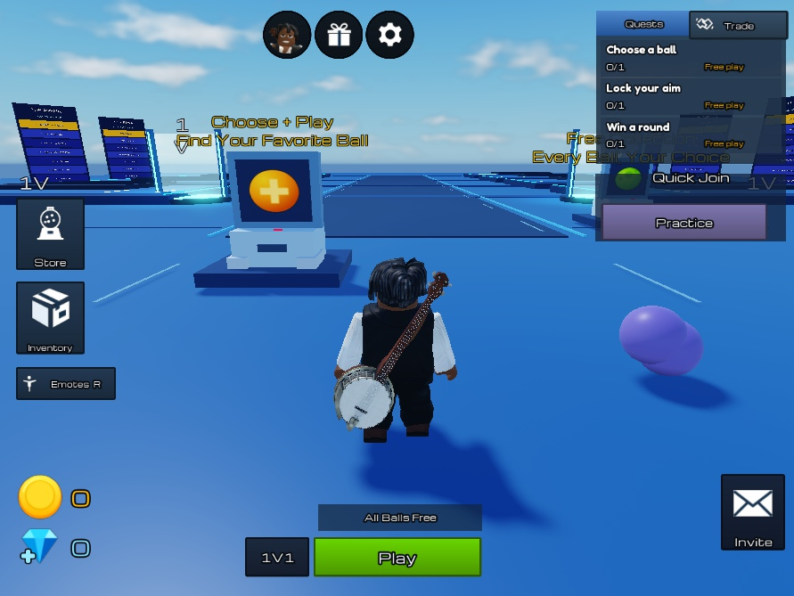
Inventory
Four illustrated tabs, scrollable collection, selected border, detail preview and Equip. Twelve original appearances are free; there are two implemented ability kits.
Ball VS Ball · recorded reference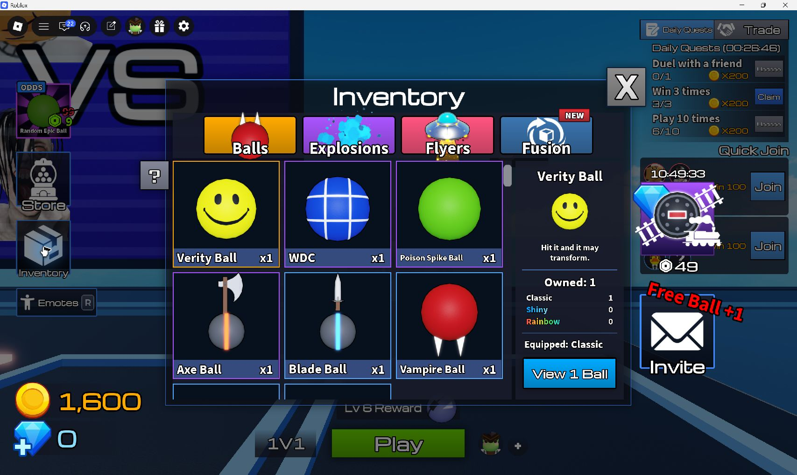
Ball VS Space · 0.3 presentation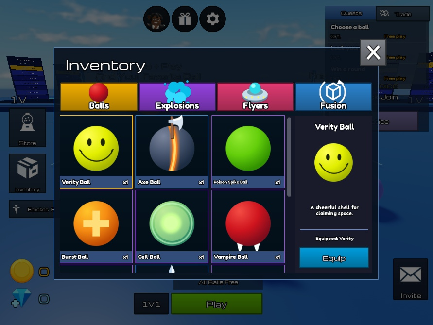
Store
Daily offers and collection spotlight. Buttons browse the available collection and cosmetic previews; no fabricated prices or purchases.
Ball VS Ball · recorded reference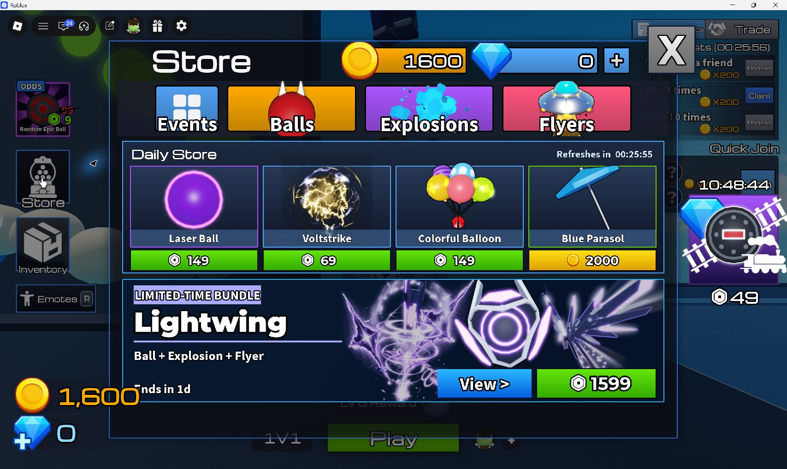
Ball VS Space · 0.3 presentation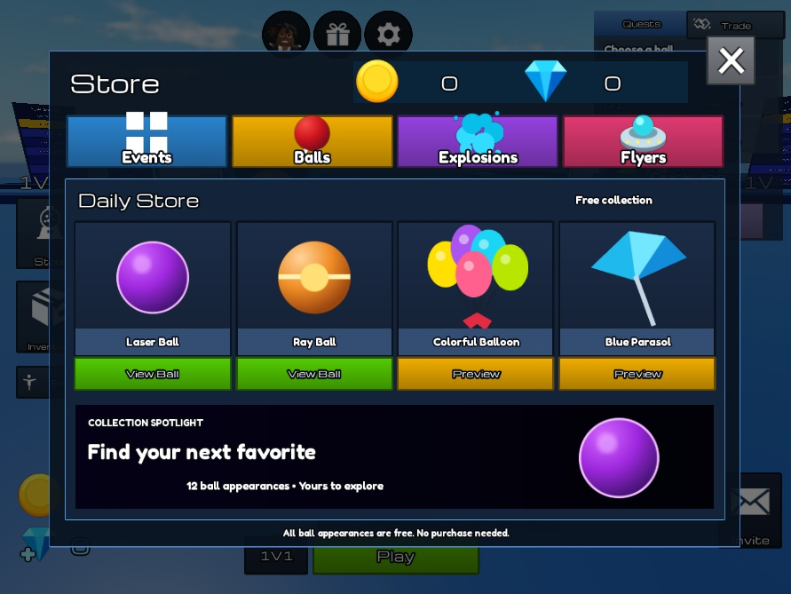
Draft
Outlined three-card selection, free collection picker and functional reroll. The opponent’s choice stays private.
Ball VS Ball · recorded reference Ball VS Space · 0.3 presentation
Ball VS Space · 0.3 presentation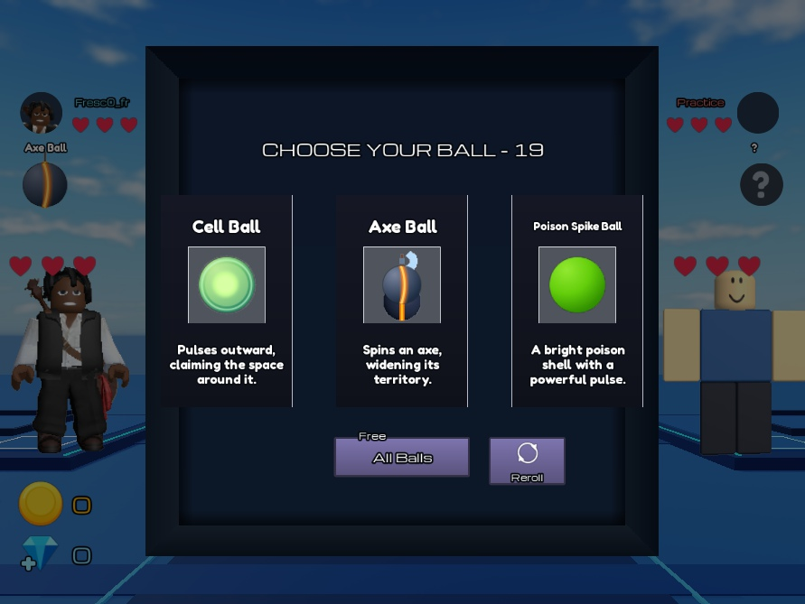
Collection
Compact grid, highlighted choice, live countdown and No/Yes. The two rows contain twelve appearances.
Ball VS Ball · recorded reference Ball VS Space · 0.3 presentation
Ball VS Space · 0.3 presentation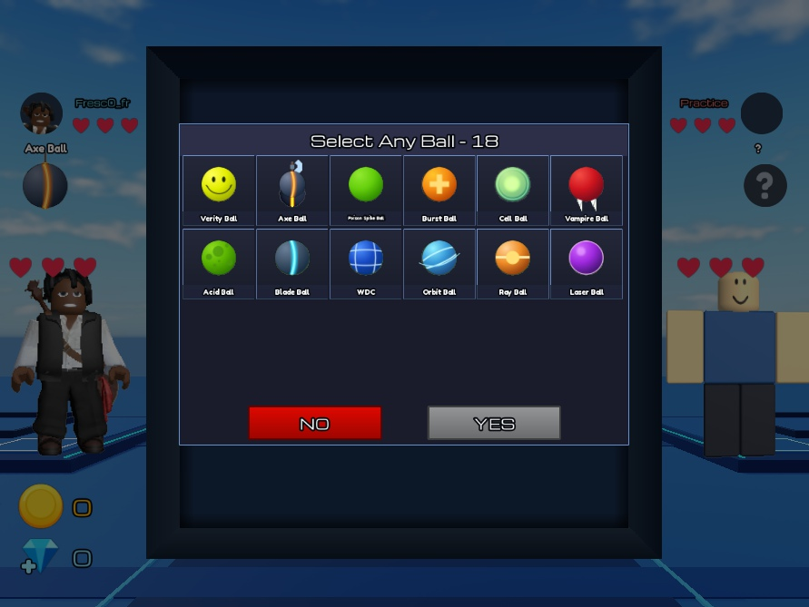
Aim
Measured court, 82.23-unit ball shells, authored surface shading, dashed arrow and gold lock control. Actual account avatars naturally differ.
Ball VS Ball · recorded reference Ball VS Space · 0.3 presentation
Ball VS Space · 0.3 presentation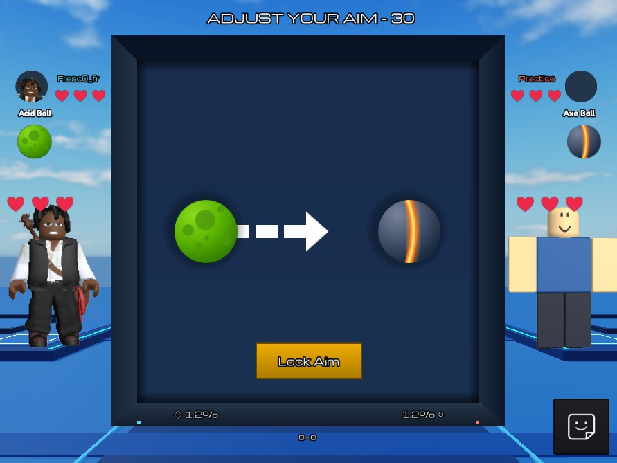
Battle
Same shell and weapon language, with original signed-grid territory gameplay. Percentages represent owned area; they are not HP.
Ball VS Ball · recorded reference Ball VS Space · 0.3 presentation
Ball VS Space · 0.3 presentation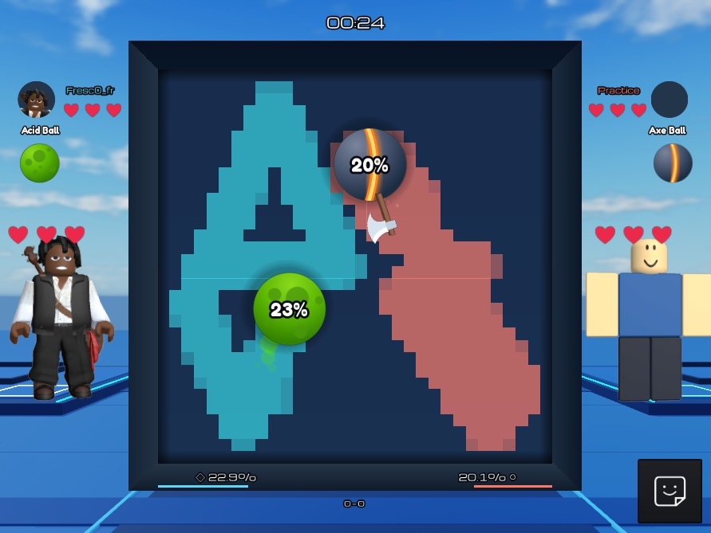
Results
Purple panel, crown, real winner and rematch. Victory/defeat is local-player aware. The reference is a wider 2v2 screen.
Ball VS Ball · recorded reference Ball VS Space · 0.3 presentation
Ball VS Space · 0.3 presentation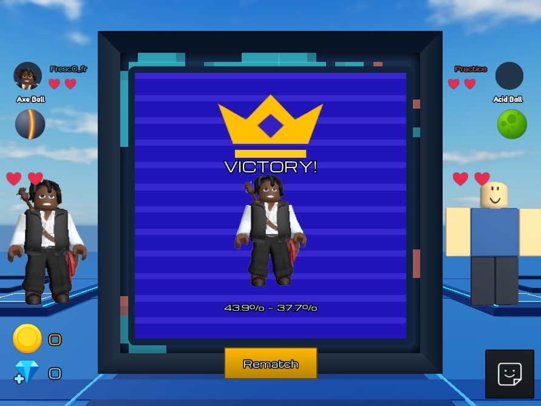
Phone layouts
Portrait Inventory and Store reflow their content. Emulator measurements verify panel bounds and at least 44 UI pixels for tested actions. These are Studio device simulations, not physical-phone performance results.
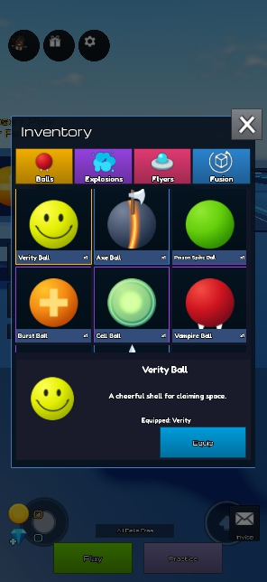
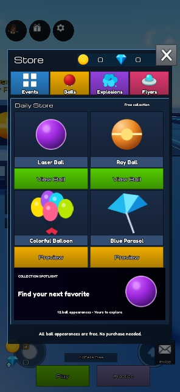
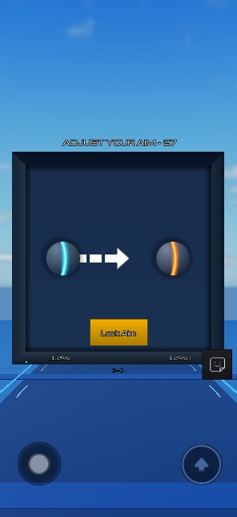
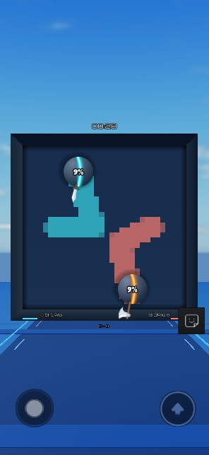